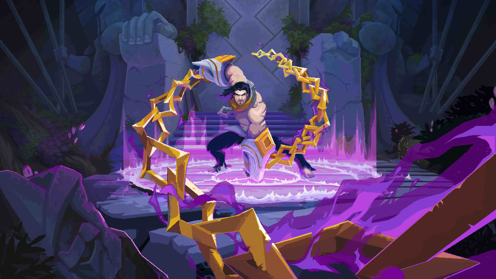

Já saiu The Mageseeker
No dia 18 de abril, a Riot Games, em parceria com a Digital Sun, lançou seu novo jogo com temática RPG e estilo arcade. Assuma o papel de Sylas, um mago ladrão de feitiços que acaba de escapar das garras dos caçadores de magos ao fugir de seu injusto cativeiro. Empunhando as correntes que antes oprimiam você, você deverá salvar seu lar da tirania, caçador após caçador de magos.
Ver mais